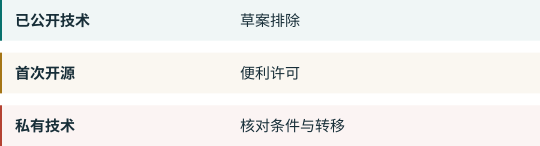

04. 中国开放模型的未来¶
三种开放不应混淆¶

可下载权重、开放软件许可、公开足够训练信息，是不同属性。开放源代码促进会的定义要求使用、研究、修改和分享自由，并包括数据信息、代码及参数。这个定义也不是中国监管部门的法律标准。OSI
DeepSeek R1仓库说明代码和权重采用MIT许可，并说明蒸馏版本的来源差异。Qwen3仓库公开模型及Apache 2.0许可。这些是已有公开发布的具体例子，不证明同一公司的所有模型或未来版本都具有同样条件。R1 QWEN
已经公开与首次公开¶
AI部分注1排除已通过开源或论文进入公共领域的技术。注2为限制类技术的开源出口提供自动许可等便利措施。这意味着已有公共文件和首次发布的私有技术可能采取不同路径。CN-A1 CNQA
发表论文并不一定公开了私有权重或训练代码。我们需要逐个识别实际公开的技术。对于受限下载、部分开放和后续私有改进，公告没有回答所有问题。这是我们对技术范围的审慎解读。CN-A1
四种可能路径，不是预测¶
继续开放。 如果便利程序按说明运行，企业可能继续通过公开模型扩大使用。支持依据是明确的开源便利政策；缩小范围的新规或有记录的延误会削弱这种判断。CN-A1 CNQA
发布前准备增加。 企业可能更多记录指标、数据和公开内容。这是我们根据草案边界作出的推论，不证明发布一定变慢。CN-A1
产品分层。 企业可能公开一个版本，同时保留更先进版本、特殊数据或智能体系统。这是商业可能性，不是公告要求。CN-A1
更多托管服务。 对限制类大模型的服务解释使这条路径合理，但它不保证服务持续、价格、隐私或不受数据类禁令影响。CNQA
什么证据会改变判断¶
我们应观察正式目录、公开发布定义、自动许可实际程序、新检查点和衍生模型的处理、出口时的排名，以及美国对算力硬件的规则。本书没有证据支持中国开放模型将在某一日期消失，也不为这些情景分配概率。CN-A1 EAR742 EAR744
对海外开发者，我们建议保存具体版本、许可、下载日期和后续改动。这是记录建议，不是新增法律义务。现有软件许可不保证未来版本，也不等于出口许可。